Clínica en Grecia, Alajuela
Salud es Vida.
Cuidamos la suya.
Clínica Médica Sánchez es un centro médico integral en Grecia, Alajuela, fundado por el Dr. Marco Antonio Sánchez Alvarado para servir a su comunidad. Hoy reunimos medicina general y urgencias, más de 25 especialidades, radiología, laboratorio clínico y farmacia bajo un mismo techo — con el trato humano y la calidez que nos han definido desde el primer día.
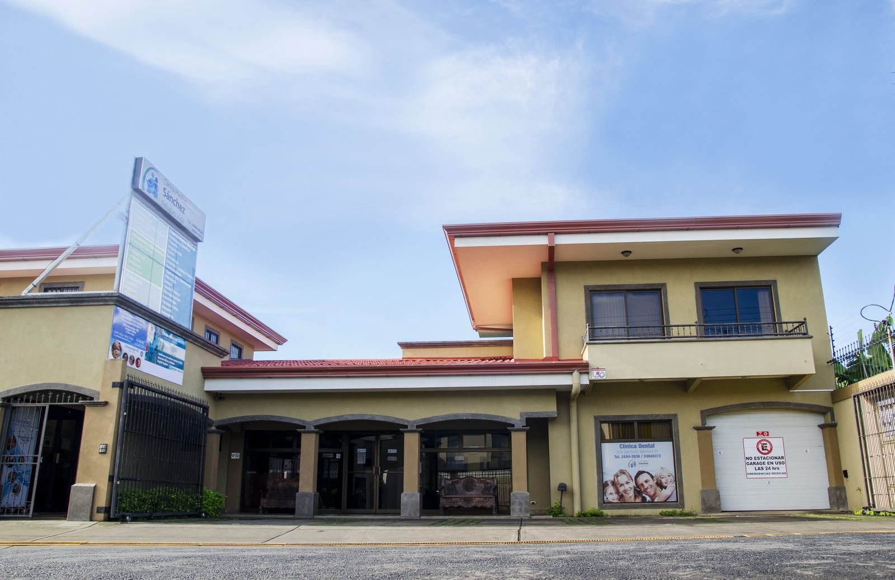
Horario de atención
- Lunes – Viernes7:00 am – 10:00 pm
- Sábado7:00 am – 5:00 pm
- Domingo8:00 am – 5:00 pm
- UrgenciasTodos los días
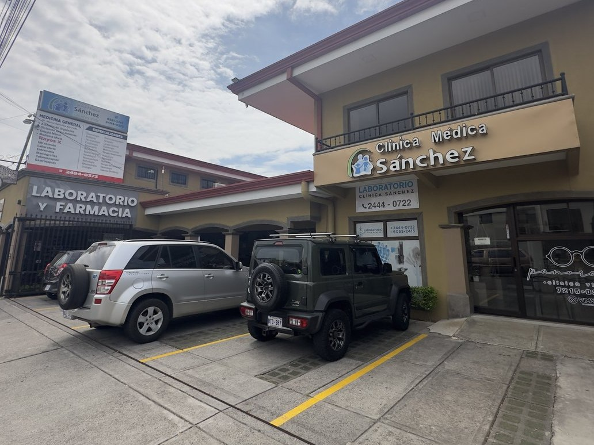
La salud de su familia, cerca de casa
Más de 25 especialidades médicas, quirúrgicas y odontológicas — sin salir de Grecia.
Medicina General y Urgencias en Grecia
Atención médica para niños y adultos. Trabajamos principalmente con cita previa, y si usted requiere atención de urgencia, también le atendemos. Siempre de la mano y en conjunto con nuestro equipo de enfermería — la primera puerta, y la más importante, para cuidar su salud y la de su familia.
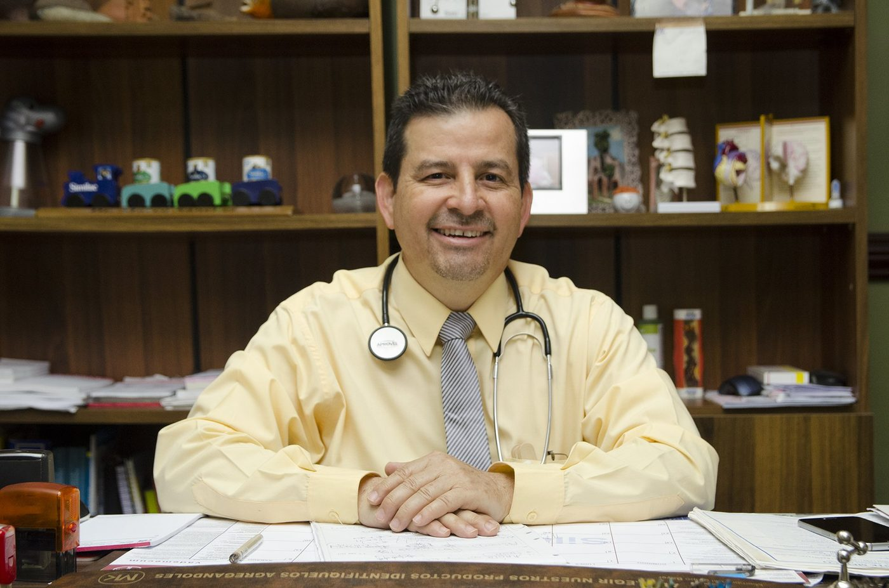
Dr. Marco Antonio Sánchez Alvarado
Médico de la comunidad griega, el Dr. Sánchez dedicó años al servicio público antes de fundar esta clínica con un sueño claro: que la excelencia médica y la atención humana fueran inseparables. Su experiencia y su calidez lo han convertido en uno de los médicos más queridos y respetados de la región.
Una clínica que nació para servir
Todo comenzó con el sueño del Dr. Marco Antonio Sánchez Alvarado, médico de la comunidad griega que, tras años dedicados al servicio público, decidió crear un espacio donde la excelencia médica y la atención humana fueran inseparables.
Con el paso de los años, ese sueño ha crecido gracias a un equipo que comparte los mismos valores: la misma vocación de servir. Hoy seguimos evolucionando — nuevas especialidades, más tecnología, mejor infraestructura — pero hay algo que nunca cambia: la manera en que recibimos a quienes confían en nosotros.
Porque detrás de cada consulta hay una persona, una familia, una historia que merece ser atendida con dedicación y calidez.
Clínica Médica Sánchez. Donde la excelencia médica y la calidez humana caminan de la mano.
Servicio de Enfermería
y Observación
Nuestra área de observación nos permite evolucionar pacientes con dolor, o que requieran tratamiento intravenoso, curación de heridas y úlceras, sutura de heridas, rehidratación y monitoreo continuo.
Personal de enfermería presente en todo momento, garantizando atención continua y tratamientos de calidad con calidez humana.
Consulta a Domicilio
Vamos a su casa de lunes a domingo. Atención médica y de enfermería sin que tenga que desplazarse. Llame al 2494-0373.
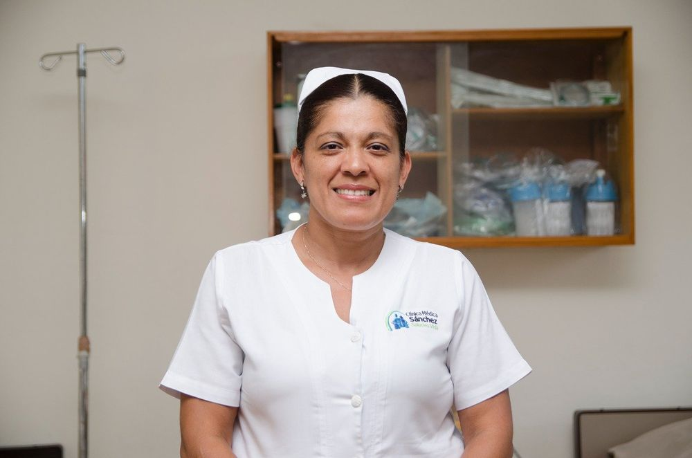
Licda. Yahaira Gustavino
Con años de experiencia al frente del equipo de enfermería, la Licda. Gustavino garantiza que cada paciente reciba atención cálida, oportuna y de calidad, a cualquier hora del día.
Médicos especialistas
en Grecia, Alajuela
Un solo equipo bajo un mismo techo, con más de 25 especialidades al servicio de la comunidad greciana. Consulte con un cardiólogo, dermatólogo, ginecólogo, pediatra, urólogo, ortopedista, neurólogo, oftalmólogo, gastroenterólogo, psiquiatra, nutricionista y más especialistas, sin salir de Grecia.
Cardiología
Gastroenterología
Endocrinología
Reumatología
Fisiatría — Consulta
Fisiatría — Procedimientos
Dermatología
Cirugía General
Otorrinolaringología
Urología
Ortopedia y Traumatología
Vascular Periférico
Oftalmología
Neurología
Nefrología
Pediatría
Ginecología y Obstetricia
Psiquiatría
Psicología
Nutrición
Terapia Física
Terapia Respiratoria
Terapia de Lenguaje
Audiología
Podología
Salud dental para toda la familia
Odontología en Grecia, Alajuela: clínica dental completa, con la misma calidez y cercanía de siempre.
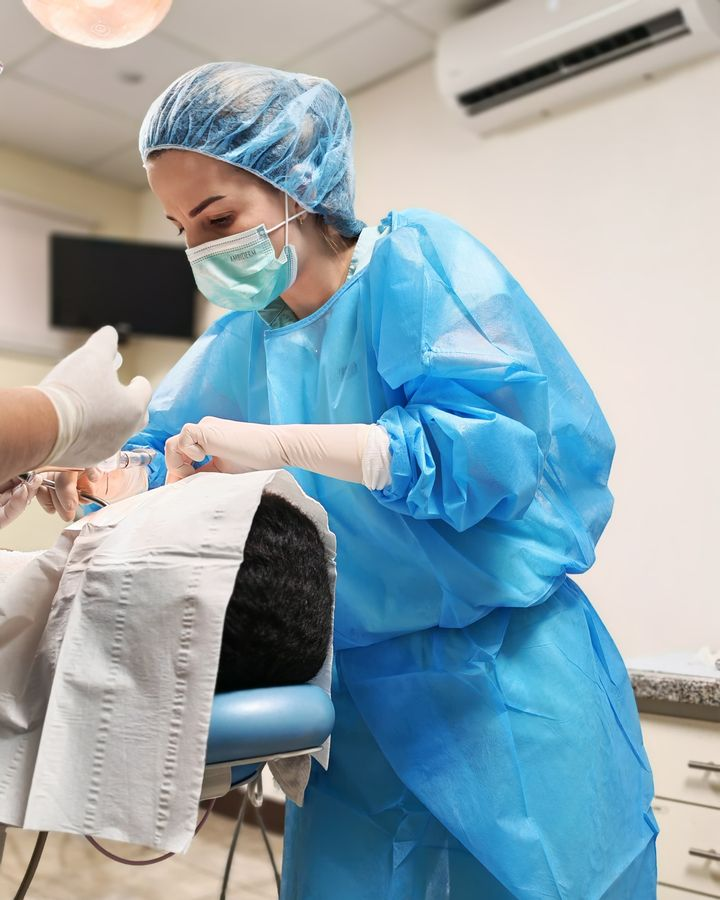
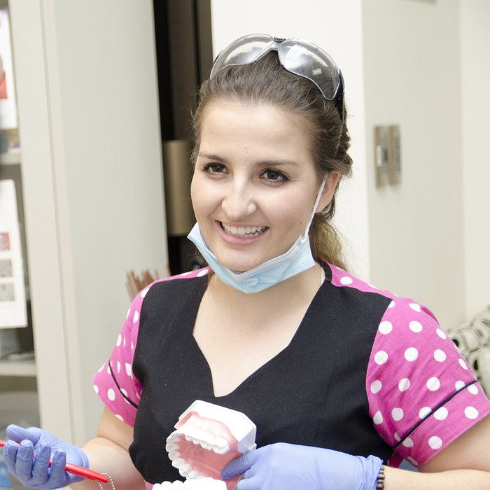
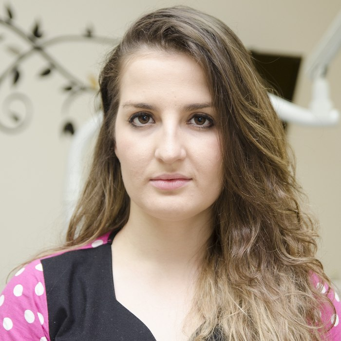
Dra. Gloriana Sánchez
Atención dental para niños y adultos, en un ambiente cercano y de confianza — con servicios que incluyen ortodoncia. Se habla inglés.
Rayos X, ultrasonido y mamografía en Grecia
Tecnología diagnóstica avanzada con resultados rápidos y lectura especializada por nuestro equipo de radiólogos.
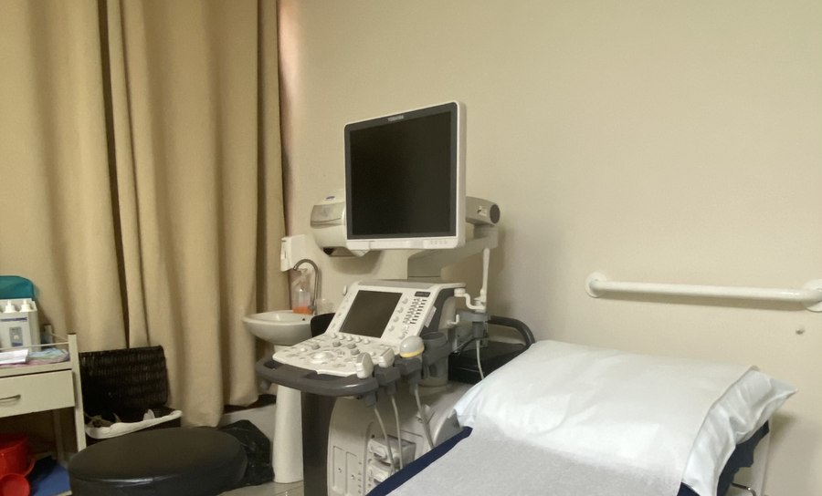
Ultrasonido
Tejidos blandos · Abdomen · Mamas · Ginecológico · Tiroides · Articular · Embarazo · Vías urinarias · Biopsias guiadas por ultrasonido
Alta demanda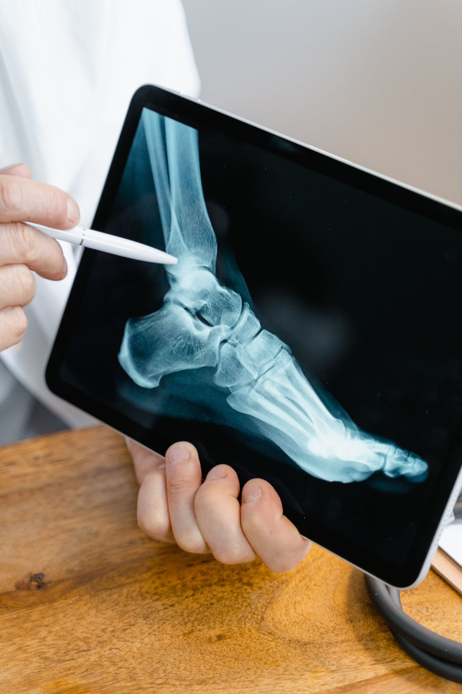
Rayos X Digital
Radiografías digitales de alta resolución, con resultados confiables y reporte de médico especialista.
Alta resolución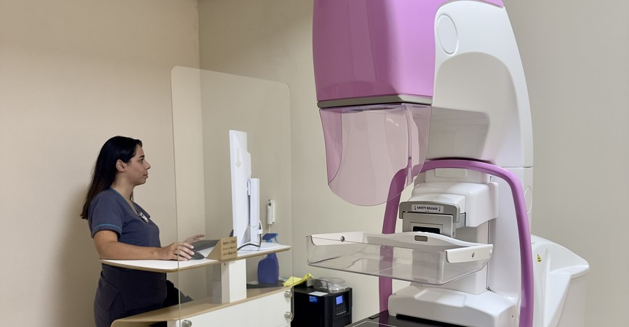
Mamografía
Detección temprana del cáncer de mama con equipo especializado de última generación.
PrevenciónEquipo de Radiología
Agendar estudio
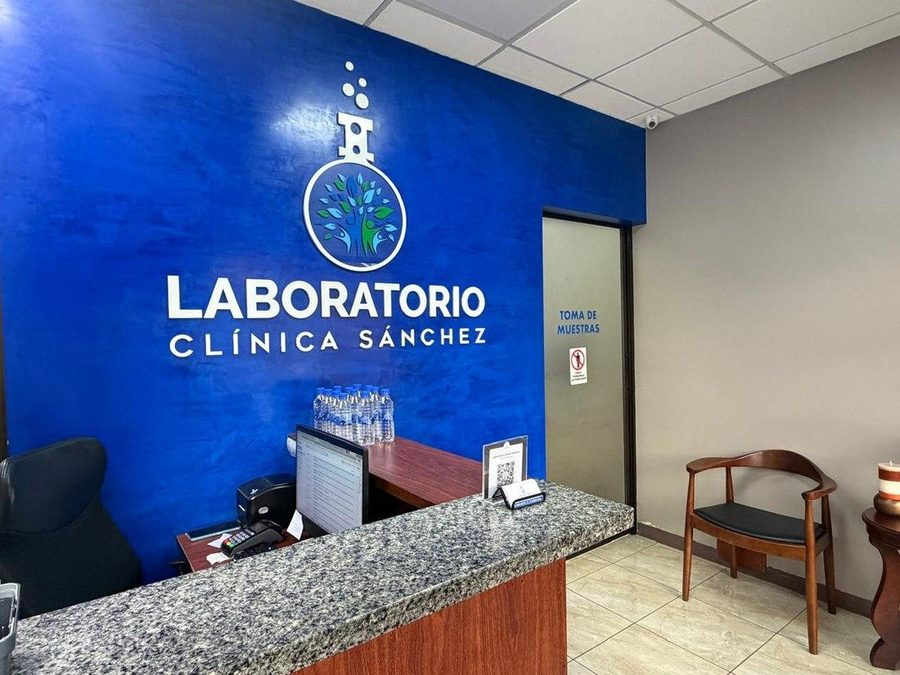
Laboratorio clínico en Grecia: resultados en los que puede confiar
Hematología, química clínica, hormonas, marcadores tumorales, inmunología y más — con servicio a domicilio y resultados por WhatsApp o correo electrónico.
Conocer el laboratorioAtendemos con su seguro médico privado
Somos proveedores autorizados de las principales aseguradoras de Costa Rica. Usted solo cancela el copago de su póliza.
PALIG
Pan-American Life Insurance Group. Cobertura internacional de primer nivel.
Red autorizadaASSA Seguros
Una de las aseguradoras más grandes de Centroamérica.
Red autorizadaADISA
Administradora de seguros con cobertura médica completa.
Red autorizadaINS
Instituto Nacional de Seguros. Cobertura de accidentes y salud.
Red autorizadaMedismart
Plan de salud complementario en especialidades seleccionadas.
Especialidades selectasBMI
Brokers & Managers International. Cobertura médica internacional.
Red autorizada¿Cómo funciona el pago con seguro privado?
Al estar dentro de la red de proveedores autorizados, usted únicamente cancela el copago de su póliza. Los honorarios médicos, procedimientos y consultas se facturan directamente a su aseguradora.
Medicina Mixta:
lo mejor de ambos mundos
Si usted es asegurado activo de la CCSS, puede atenderse con nuestros médicos privados y conservar los beneficios de la Caja. Elija al médico de su preferencia, sin listas de espera.
Mantiene acceso a medicamentos, exámenes y especialistas de la CCSS, con la comodidad de la medicina privada.
Medicamentos por la CCSS
Sigue retirando sus medicamentos en la farmacia de la Caja sin costo adicional.
Exámenes de laboratorio
Accede a laboratorio, rayos X y estudios a través de la CCSS.
Médico de su preferencia
Sin listas de espera, con el médico privado autorizado que prefiera.
Referencias a especialistas
El médico puede referirle a especialistas de la CCSS cuando sea necesario.
Más servicios para su comodidad
Consulta a Domicilio
Vamos a su casa de lunes a domingo. Atención médica y de enfermería en la comodidad de su hogar. Llame al 2494-0373.
Dictamen Médico para Licencia
Autorizados para el dictamen médico para solicitar o renovar su licencia de conducir. Sin cita previa.
Dictamen Médico
Certificados y dictámenes médicos generales para trámites laborales, de estudio u otros fines — distinto del dictamen para licencia de conducir.
Espirometría
Prueba de función pulmonar para diagnóstico de asma, EPOC y enfermedades respiratorias.
Todo bajo un mismo techo
Aliados estratégicos que complementan nuestra atención médica integral.
Laboratorio Clínica Sánchez
Procesamiento de muestras de todo tipo con resultados precisos y oportunos.
Visitar página web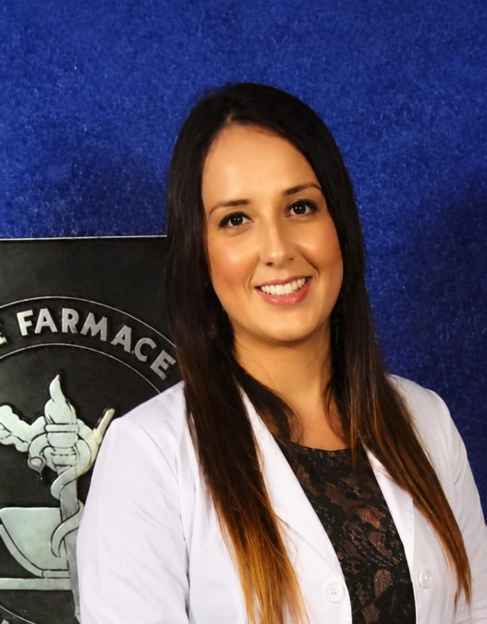
Farmacia CTL
Su farmacia de confianza con amplio inventario. Servicio a domicilio de lunes a viernes.
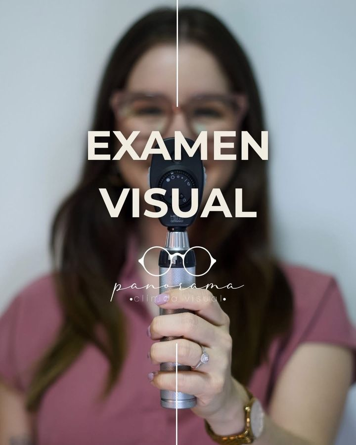
Óptica Panorama Visual
Servicio completo de salud visual, lentes y exámenes de la vista para toda la familia.
Abiertos toda la semana
Lunes a Viernes
Medicina General, urgencias, enfermería, especialidades, Rayos X y laboratorio
Sábado
Medicina General, urgencias, enfermería, Rayos X y laboratorio
Domingo
Medicina General, urgencias, enfermería y laboratorio
Ubicación central en Grecia, Alajuela
Dirección
400 metros Este del BCR, Grecia Centro, Alajuela
Teléfono central
2494-0373WhatsApp / Citas
8381-3741Correo electrónico
info@clinicamedicasanchezcr.com¿Listo para agendar su cita?
Contáctenos por WhatsApp o llámenos directamente. Nuestro equipo le orienta sobre la especialidad que necesita.
¿Tiene dudas?
Estas son las preguntas que más nos hacen. Si no encuentra la suya, escríbanos por WhatsApp.
¿Dónde hay atención de urgencias médicas en Grecia?
En Clínica Médica Sánchez brindamos atención de urgencias todos los días de la semana. Trabajamos principalmente con cita previa, pero si usted requiere atención de urgencia, también le atendemos. Llame al 2494-0373 o escríbanos por WhatsApp al 8381-3741.
¿Necesito cita previa para una urgencia?
No necesariamente. Aunque nuestro modelo de atención es principalmente con cita previa, si usted tiene una urgencia médica lo atendemos de todas formas, los 7 días de la semana.
¿Dónde me pueden sacar una radiografía (placa) en Grecia?
Contamos con servicio de Rayos X Digital dentro de nuestras instalaciones en Grecia centro, con resultados de alta resolución y reporte de médico especialista.
¿Qué aseguradoras privadas aceptan en Grecia?
Somos proveedores autorizados de PALIG, ASSA, ADISA, INS, Medismart y BMI. Usted solo cancela el copago de su póliza.
¿Qué es la Medicina Mixta de la CCSS y dónde puedo usarla en Grecia?
La Medicina Mixta le permite usar su seguro de la CCSS para consultar con un médico privado. En Clínica Médica Sánchez contamos con este servicio, aunque no todos los médicos participan — debe solicitarlo expresamente al agendar su cita.
¿Hacen consultas médicas a domicilio en Grecia?
Sí. Ofrecemos consulta a domicilio de lunes a domingo, con atención médica y de enfermería sin que tenga que desplazarse. Llame al 2494-0373 para coordinar.
¿Dónde puedo sacar el dictamen médico para la licencia de conducir en Grecia?
En Clínica Médica Sánchez realizamos el dictamen médico para solicitar o renovar la licencia de conducir, sin necesidad de cita previa.
¿Qué especialidades médicas hay en la clínica?
Contamos con más de 25 especialidades médicas, quirúrgicas y odontológicas — cardiología, ginecología, pediatría, dermatología, ortopedia, neurología y muchas más — todas bajo un mismo techo en Grecia.
¿La clínica atiende en inglés?
Sí, se habla inglés en toda la clínica y con la mayoría de nuestros especialistas.
¿Cuál es el horario de atención de la clínica en Grecia?
Atendemos de lunes a viernes de 7:00am a 10:00pm, sábados de 7:00am a 5:00pm, y domingos de 8:00am a 5:00pm. La atención de urgencias está disponible todos los días.
¿Dónde hacer un ultrasonido en Grecia, Alajuela?
En Clínica Médica Sánchez contamos con ultrasonido en nuestras instalaciones en Grecia centro: tejidos blandos, abdomen, mamas, ginecológico, tiroides, articular, embarazo, vías urinarias y biopsias guiadas por ultrasonido. Para agendar su estudio llame al 2494-0373 o escriba por WhatsApp al 8381-3741.
¿Hacen mamografías en Grecia?
Sí. Contamos con mamografía para la detección temprana del cáncer de mama, con equipo especializado, dentro de la clínica en Grecia centro. Para agendar su estudio llame al 2494-0373 o escriba por WhatsApp al 8381-3741.
¿Hay cardiólogo, dermatólogo, ginecólogo o pediatra en Grecia?
Sí. En Clínica Médica Sánchez atienden especialistas en cardiología, dermatología, ginecología y obstetricia, pediatría, urología, ortopedia, neurología, oftalmología, gastroenterología, psiquiatría y más, además de nutrición y psicología. Puede ver el equipo completo en la sección de especialidades de esta página y agendar su cita al 2494-0373 o por WhatsApp al 8381-3741.
¿Hay dentista en Grecia? ¿Atienden niños y adultos?
Sí. Contamos con Odontología general para niños y adultos, con servicios que incluyen ortodoncia y limpieza dental. Se habla inglés.
¿Dónde puedo hacerme exámenes de laboratorio (sangre, orina, dengue) en Grecia?
En Laboratorio Clínica Sánchez, en Grecia centro, dentro de las instalaciones de la clínica. Procesa exámenes de hematología, química clínica, hormonas e inmunología (dengue, Chikungunya y otras infecciones virales), entre otros, con servicio a domicilio y resultados por WhatsApp o correo electrónico. Teléfonos del laboratorio: 2444-0722 y 6055-2415.
¿Dónde queda Clínica Médica Sánchez en Grecia?
Estamos en Grecia Centro, 400 metros Este del BCR, Alajuela. En la sección Ubicación de esta página encontrará el mapa y los botones para abrir la ruta en Google Maps o Waze.
¿Cómo agendo una cita en Clínica Médica Sánchez?
Puede llamar al 2494-0373 o escribir por WhatsApp al 8381-3741. Trabajamos principalmente con cita previa; si usted tiene una urgencia, también le atendemos.
¿Hacen curaciones, suturas o tratamiento intravenoso (suero) en Grecia?
Sí. Nuestra área de enfermería y observación atiende curación de heridas y úlceras, sutura de heridas, tratamiento intravenoso, rehidratación y monitoreo continuo, con personal de enfermería presente en todo momento.